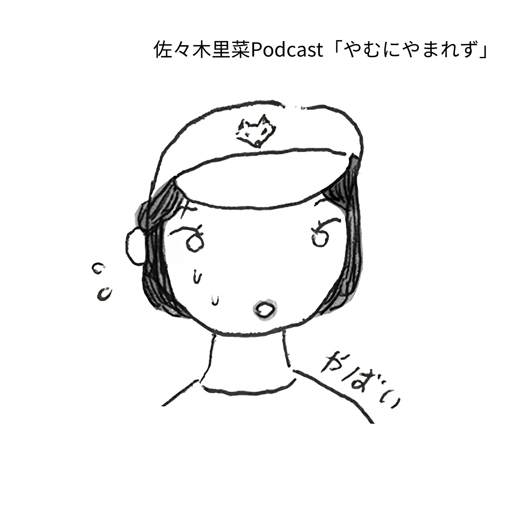

☆ Podcast
佐々木里菜の「やむにやまれず」

写真家の佐々木里菜がやむにやまれない理由で始めたひとりPodcast。
ひとり喋りは数年前に断念したはずなのに、なぜ！？
やむにやまれない理由＝初めての商業書籍の宣伝のために始めたPodcastですが、
最近考えていること、読んだ本、起きた出来事、食べたものなど、
佐々木が1週間分のおしゃべりをするPodcastです。
毎週水曜更新、30〜40分の尺を目指しています。
が、無限に喋れてしまうため、ときどき映画1本分くらい喋ることもあります。
番組へのレターはこちら stand.fm のレター機能からどなたでもお送りいただけます。
匿名でのお送りも大歓迎です。悪口やちくちく言葉以外でお願いしております。
カバーアイコン：ナガタニサキ
協賛： takamori
Spotify Apple Podcast YouTube stand.fm
ひとり喋りは数年前に断念したはずなのに、なぜ！？
やむにやまれない理由＝初めての商業書籍の宣伝のために始めたPodcastですが、
最近考えていること、読んだ本、起きた出来事、食べたものなど、
佐々木が1週間分のおしゃべりをするPodcastです。
毎週水曜更新、30〜40分の尺を目指しています。
が、無限に喋れてしまうため、ときどき映画1本分くらい喋ることもあります。
番組へのレターはこちら stand.fm のレター機能からどなたでもお送りいただけます。
匿名でのお送りも大歓迎です。悪口やちくちく言葉以外でお願いしております。
カバーアイコン：ナガタニサキ
協賛： takamori
Spotify Apple Podcast YouTube stand.fm